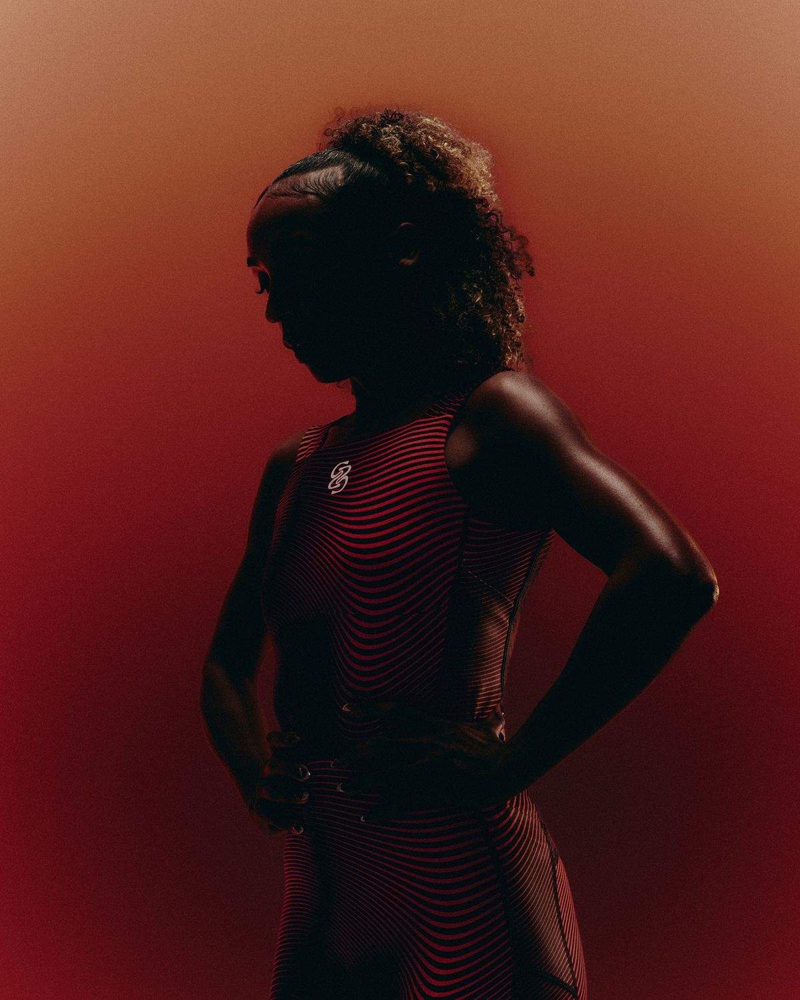
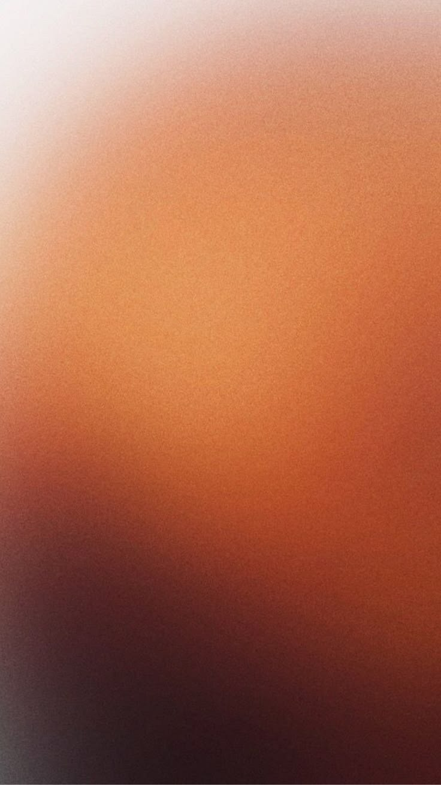
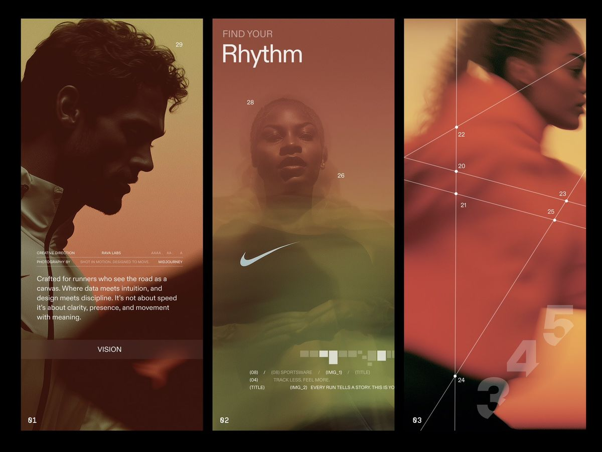
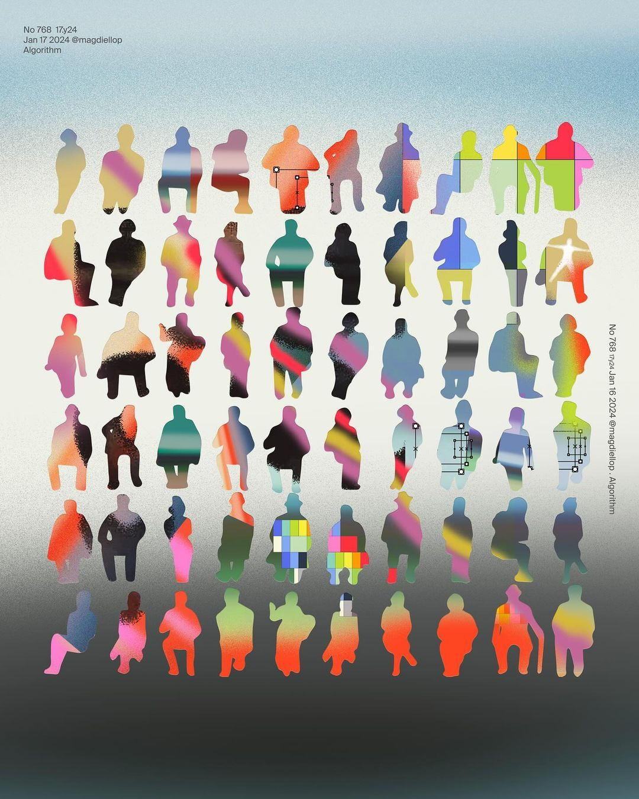

Product Video
Think it. Say it. Draft it.
The problem
Most design tools wait for you to know what you want. Draft works before that moment.




What Draft does
Four ways Draft turns a spoken idea into something you can actually use.
What Draft creates
Palette suggestions pulled from your brief. Soft, bold, muted, electric, earthy. Built to match the feeling and direction of the project, not just random color combinations.
Interface references that reflect the type of product you're building. Layouts, typography, interactions, and flows pulled from real products with a similar energy and structure.
Photography, textures, illustrations, and visual references chosen for mood and atmosphere. Less about matching keywords, more about capturing the right feeling.
Everything brought together into one visual direction. Color, interface inspiration, imagery, and overall tone organized into a board you can actually build from or present to a team.